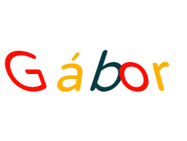
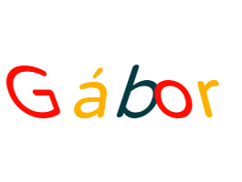

27 éves vagyok, logisztikusként végeztem, 5 testvérem van, csökkenő sorrendben a 4. vagyok a családban. Érden nőttem fel de Budapestre jártam iskolákba így mivel az időm nagyobb részét itt töltöttem inkább Budapestinek tartom magam. Régóta érdekel az informatika, sokmindent kipróbáltam már eddig és úgy gondolom ezen a területen fogom megtalálni leginkább a számításaimat. A Training360 tűnik jelenleg a legjobb karrierváltási lehetőségnek így örülök, hogy a csapat részese lehetek.
 
